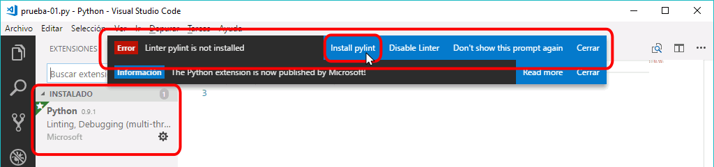
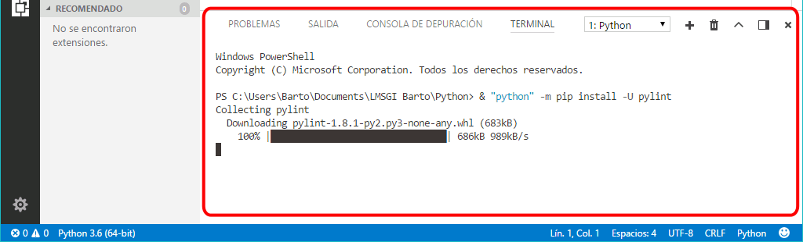
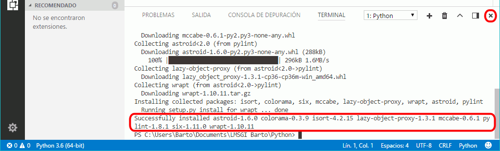
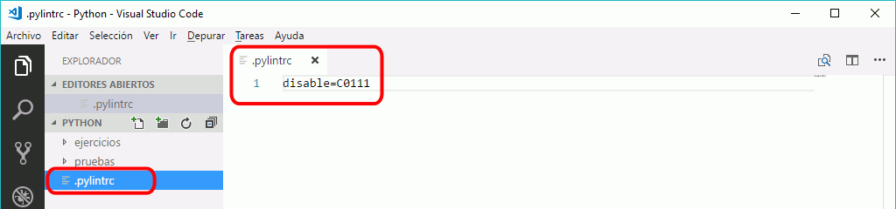

Extensiones recomendadas para el curso de Python
Estas son las extensiones que se aconseja instalar para seguir el curso Introducción a la programación con Python de mclibre.org.
Python extension for Visual Studio Code

Autor: Microsoft (Don Jayamanne)
Marketplace: Python for VSC
Instalación de pylint
Al recargar Visual Studio tras instalar la extensión, se mostrará un aviso indicando que se debe instalar el paquete pylint. Haga clic en "Install pylint" para instalarlo.

Se abrirá en la parte inferior una ventana de PowerShell en la que se ejecutará la instalación de pylint y de sus dependencias.

Si la instalación se realiza correctamente, se mostrará el aviso correspondiente. Puede cerrar la ventana haciendo clic en el icono de cierre.

Configuración de pylint
La lista de mensajes de error y avisos de Pylint se encuentra en el apartado Pylint Features de la documentación de Pylint. En Wikidot hay también una lista ordenada por código de error, pero no sé si está actualizada.
Algunos avisos de Pylint no son relevantes para un curso de iniciación a la programación y prefiero que estén desactivados. Por ejemplo:
- C0111: algún módulo, función, clase o método no tiene docstring
Para que la desactivación de avisos afecte únicamente a los programas de este curso (ejercicios y pruebas), cree un archivo .pylintrc en la carpeta Python, con el contenido siguiente:
disable=C0111
